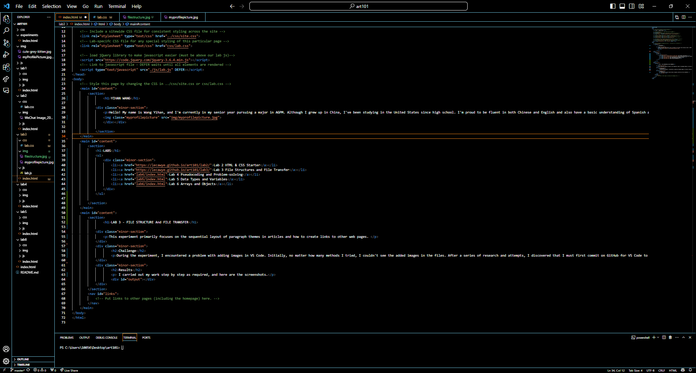
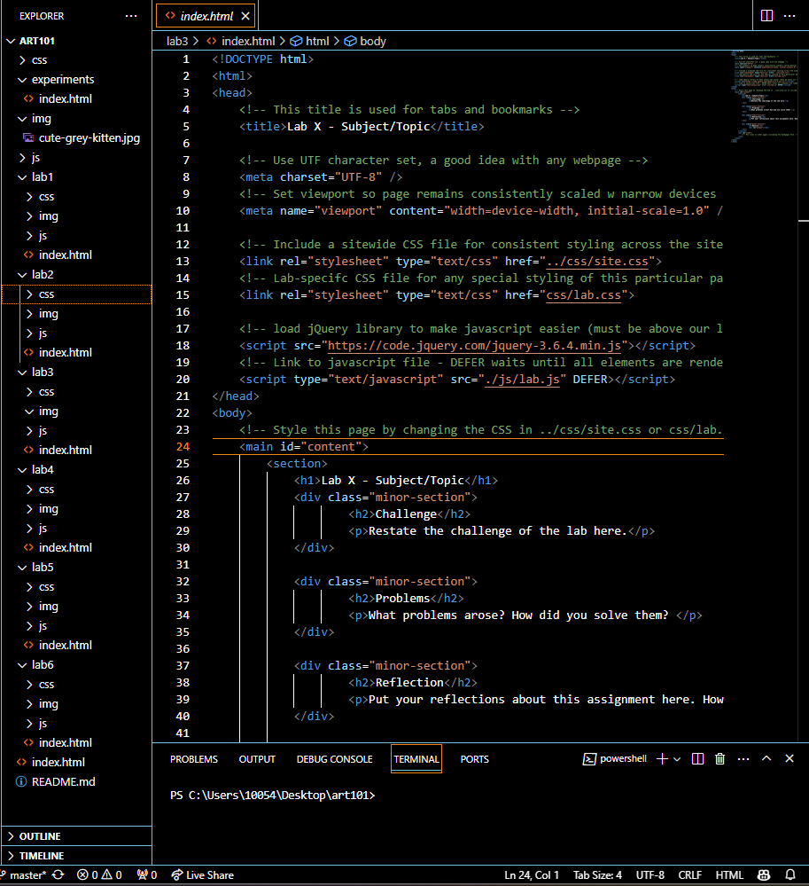

LAB 3 - FILE STRUCTURE And FILE TRANSFER
This experiment primarily focuses on the sequential layout of paragraph themes in articles and how to create links to other web pages.
Challenge
During the experiment, I encountered a problem with adding images in VS Code. Initially, no matter how many methods I tried, I couldn't see the added images in the files. After a series of research and attempts, I discovered that I must first commit on GitHub for VS Code to track the images. Once successfully tracked, I can freely use them in the HTML file.
Results
I carried out my work step by step as required, and here are the screenshots.
 